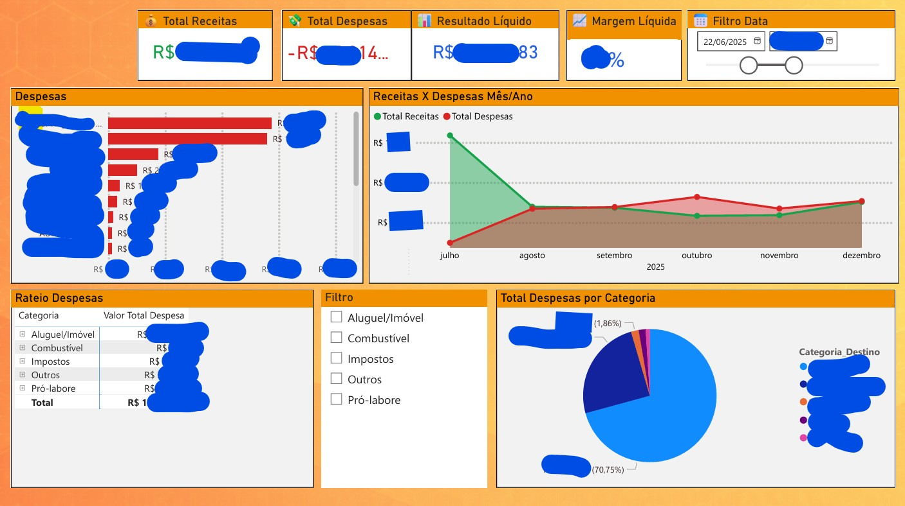
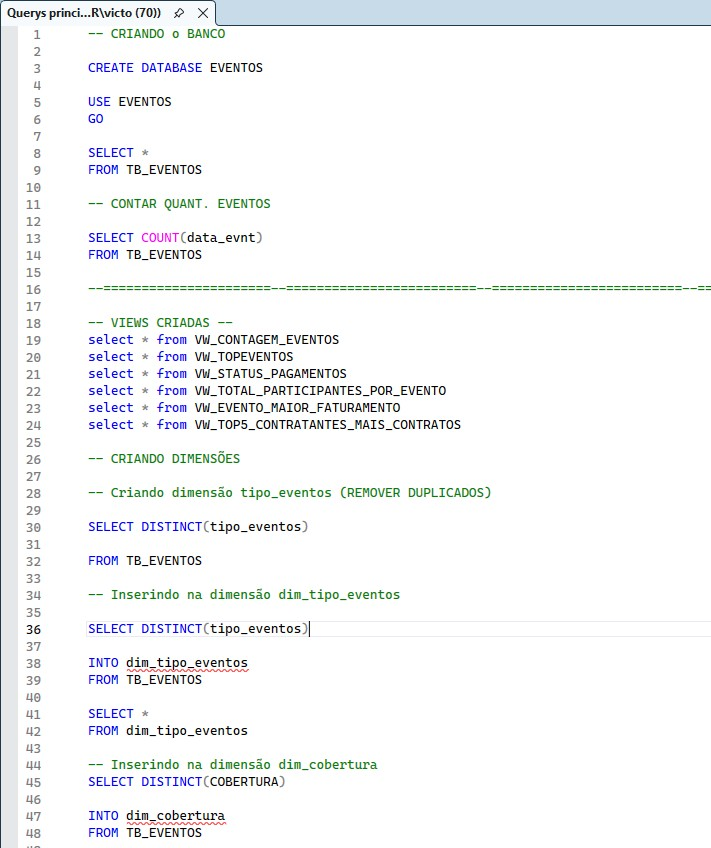

Power BI
Power BI
E-commerce
Solução analítica para monitoramento de e-commerce, focada em identificar gargalos de faturamento, produtos de baixa rotação e comportamento de compra dos clientes para suporte à decisão estratégica.
Acessar

Minha trajetória combina a visão estratégica da Administração com a precisão da tecnologia. Com sólida experiência como Supervisor de Polos EAD na Unoeste, desenvolvi uma forte cultura de gestão e liderança. Hoje, essa vivência é o pilar que sustenta meu trabalho como desenvolvedor de soluções de dados.
Atualmente, curso Tecnologia da Informação na Univesp, onde aplico Python, Power BI e conhecimentos fundamentais em SQL para transformar dados brutos em inteligência para a tomada de decisão. Acredito que a tecnologia é a melhor ferramenta para otimizar processos e criar valor real.
Conheça alguns dos meus trabalhos!
Com o conhecimento que adquiri na faculdade e nos cursos do Senai de Presidente Prudente, desenvolvi habilidades para atuar com análise de dados, Business Intelligence e programação.
Realizei diversos projetos que aliam teoria e prática, criando soluções de Business Intelligence, automações e análises aplicadas ao negócio. Minha experiência inclui a criação de dashboards interativos em Power BI e projetos de ETL com Python e SQL Server.
Todos os dados e informações apresentados são ilustrativos e foram utilizados apenas para fins de demonstração, preservando a confidencialidade e integridade dos dados reais das empresas. Os projetos refletem aplicações práticas em análise de dados, Business Intelligence, automações e desenvolvimento de soluções.
Power BI
Solução analítica para monitoramento de e-commerce, focada em identificar gargalos de faturamento, produtos de baixa rotação e comportamento de compra dos clientes para suporte à decisão estratégica.
Acessar Power BI
Power BI
Indicadores de entregas, prazos, custos, faturamento por clientes, região, pedidos e volumes.
Acessar Power BI
Power BI
Painel de People Analytics estruturado para controle de Turnover (rotatividade), absenteísmo e análise de custos por filiais, permitindo ao RH agir preventivamente na retenção de talentos.
Acessar Power BI
Power BI
Dashboard com indicadores de locações, tipos de veículos, número de reservas, faturamento e perfil dos clientes.
Acessar Power BI
Power BI
Dashboard com indicadores de inscrições, matrículas, conversão, comparativo de unidades e região.
Acessar Power BI
Power BI
Dashboard com indicadores de inscrições, matrículas, conversão, comparativo de cursos e vendedores.
Acessar Power BI + Dados
Power BI + Dados
Dashboard com indicadores de alunos do ensino superior por cidade, matrículas, evasão e outras informações estratégicas.
Acessar Power BI
Power BI
Dashboard com indicadores por vendedores, relatórios de faturamento, formas de pagamento e filtros avançados.
Acessar Power BI
Power BI
Dashboard com indicadores de faturamento, dados de alunos e gráficos comparativos entre campus e cursos.
Acessar Power BI + SQL
Power BI + SQL
Solução de BI para gestão de eventos, abrangendo estruturação e tratamento de dados no SQL Server e visualização analítica no Power BI.
Acessar
Power BI + ETLSolução de BI para análise financeira, com extração de dados, tratamento, modelagem em SQL Server e construção de dashboards no Power BI.
Acessar Python + Flask + JS
Python + Flask + JS
Sistema escolar estruturado com API RESTful distribuída, autenticação, controle de CRUD completo para entidades acadêmicas e banco SQLite.
Acessar Python + Flask + APIs
Python + Flask + APIs
Aplicação em Flask integrada com Bootstrap 5. Reúne ferramentas de cálculo operacional e consumo de APIs externas (ViaCEP, OpenWeather e cotações).
Acessar
SQL + PythonÁrea para documentação de consultas SQL Server, processos ETL com Python/Pandas e automações voltadas à análise e preparação de dados.
Acessar GitHubNenhum projeto cadastrado nesta categoria ainda. Quando houver novos projetos, basta adicionar um card com a categoria correspondente.
Entre em contato pelo WhatsAppEste portfólio foi preparado para o GitHub Pages, portanto não utiliza backend nem formulário com armazenamento de dados. Para contato profissional, utilize um dos canais abaixo.